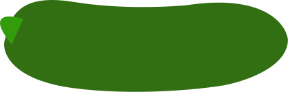
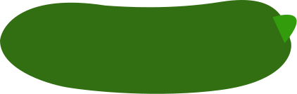

О шрифте
Vollkorn - шрифтовая гарнитура
с засечками, разработанная Фридрихом Альтхаузенном. Задуман как
спокойный, скромный шрифт.
В 2010 году Vollkorn вошел в число первых шрифтов Google Fonts.
Italic Medium I
SemiB I Bold I
ExtraB I Black I
Black ExtaBold
Bold SemiBold
Medium Regular
Шрифт легко
читается в
любом
стиле
АНГЛИЙСКИЙ РУССКИЙ НЕМЕЦКИЙ ПОЛЬСКИЙ ФРАНЦУЗСКИЙ БЕЛОРУССКИЙ ИСПАНСКИЙ
УКРАИНСКИЙ ИТАЛЬЯНСКИЙ ЧЕШСКИЙ БОЛГАРСКИЙ ПОРТУГАЛЬСКИЙ СЕРБСКИЙ
ШВЕДСКИЙ КАЗАХСКИЙ ТУРЕЦКИЙ ГРЕЧЕСКИЙ НИДЕРЛАНДСКИЙ РУМЫНСКИЙ ФИНСКИЙ
ВЕНГЕРСКИЙ ЛИТОВСКИЙ ЛАТЫШСКИЙ ЭСТОНСКИЙ ХОРВАТСКИЙ СЛОВАЦКИЙ НОРВЕЖСКИЙ
ДАТСКИЙ
Более 2000 глифов
74 языка
К

Засечки имеют
наклонное направление

Окончания засечек
расположены под углом
Мягкие очертания
и плавные переходы
АБВГДЕЁЖЗИ
ЙКЛМНОПРС
ТУФХЦЧШЩЪ
ЫЬЭЮЯ
ABCDEFGH
IJKLMNOP
QRSTUVW
XYZ
0123456789
Куратор: Цветников Николай Куратор: Комкова Анна Студент: Малащук
Вадим